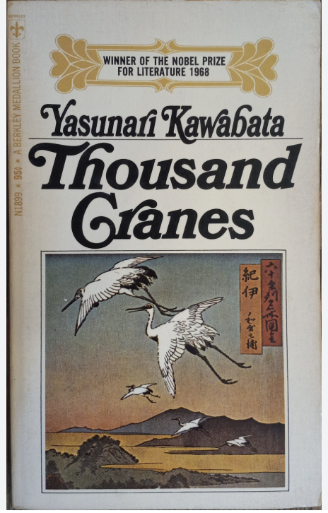
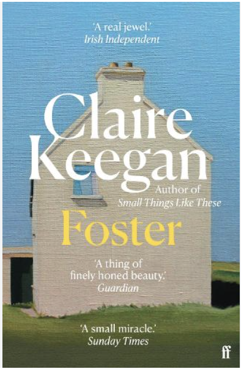

Thousand Cranes

A raw, honest, and intimate description of the life of a young man who wants to truly experience life.
Write the rest of your review here. Add as many paragraphs as you like — each one goes inside its own p tag.
Novels and short stories.

A raw, honest, and intimate description of the life of a young man who wants to truly experience life.
Write the rest of your review here. Add as many paragraphs as you like — each one goes inside its own p tag.

You are a teenage girl who feels lonely and unwanted in her own family but finds peace and comfort with her distant relatives. But as you begin to question where you truly belong, you must ask yourself: who do you really love, and who truly loves you?
Write the rest of your review here.